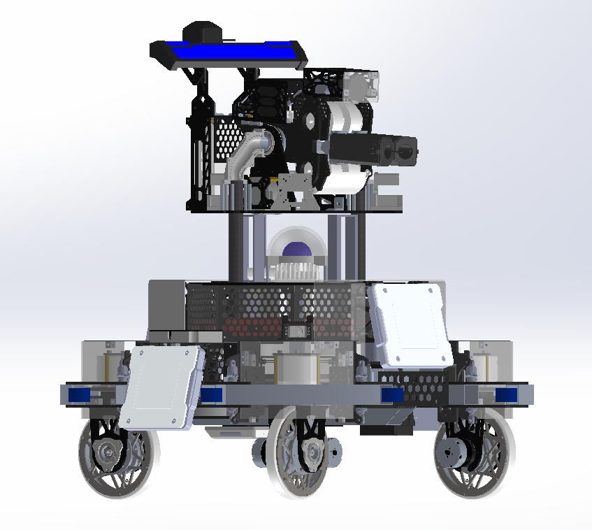

RoboMaster sentry robot, 2025 season
ROLE & KEY CONTRIBUTIONS
Sentry mechanical lead through Jan 2025, carrying the third-generation sentry to a national title.
- Continued the static-analysis-driven panel lightweighting program on the proven 2024 architecture;
- Refined the chassis and gimbal for whole-machine stability and field repeatability;
- Delivered the national first prize in the sentry category (2025) — the design's second category title in three years.
Overview
The third-generation sentry (v5) built on the proven 2024 architecture (see the 2023–2024 story) rather than reinventing it. With the layout, drivetrain, and perception system validated over two seasons, the 2025 iteration focused on two things: getting weight out of every structural panel, and making the whole machine more stable and repeatable on the field.
What changed
- Panel lightweighting. Continued the static-analysis-driven weight-reduction program across the structural boards, cutting mass without giving up stiffness where the load paths need it.
- Whole-machine stability. Refinements across the chassis and gimbal to improve consistency of movement and launching — building on the 2024 suspension and mass-centering work and pushing reliability further.
The robot took the sentry-category national first prize in the 2025 season — the design's second category title in three years.
Media

The drivetrain under this robot is documented in the
drivetrain deep dive.